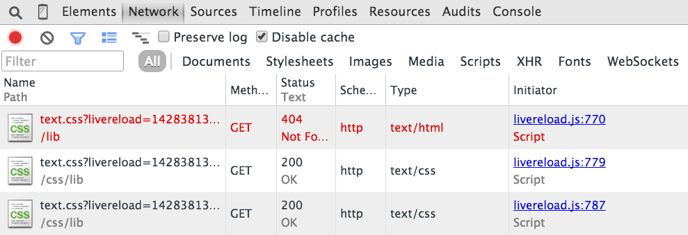

Assuming you've got the server started using grunt, you should be viewing this on a local webserver on port 9090, with livereload running on port 9091.
Now, open the Network tab of your browser console and clear it. Make an edit to the font-size in css/lib/text.css. Note that livereload triggers a bad request for /lib/text.css, which 404s, and then not one but two successful requests for the correct URI at /css/lib/text/css.
What this looks like for me:

If you think this is an issue with my setup, rather than a bug in grunt-contrib-watch, I'd be glad to hear it. Email Me!